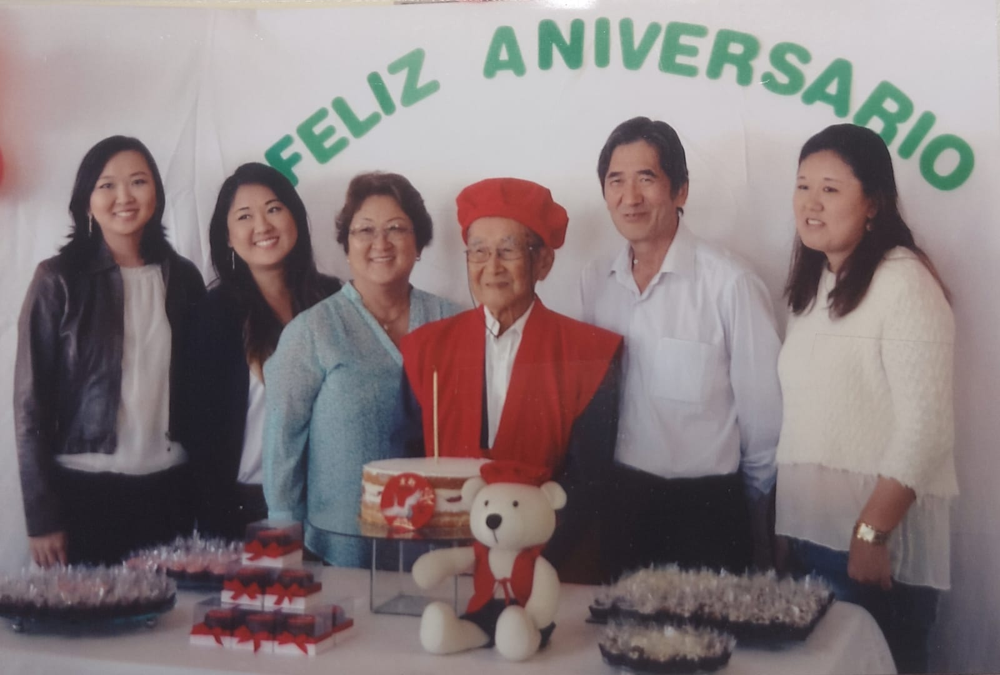

Curiosidades
- Em 1928, a família do meu avô materno viajaram de navio do Japão para o Brasil durante 2 meses. Hoje em dia, essa mesma viagem seria feita de avião e duraria 25 horas.
- Meu avô materno comemorou seu aniversário de 88 anos com a celebração do arroz. Chamado de Beiju (米寿), significa "idade do arroz" porque o ideograma de 8 mais 80 (八十八) quando unidos, formam o mesmo do kanji de arroz (米). Arroz é o simbolo da bondade e abundância. A cor da vestimenta costuma ser amarelo ou marrom avermelhado, mas meu avô preferiu a vermelha.

- Aos cinco anos, meus avós paternos já trabalhavam em uma lavoura de café.